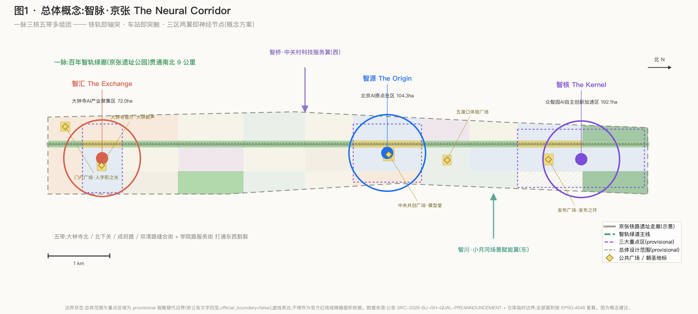
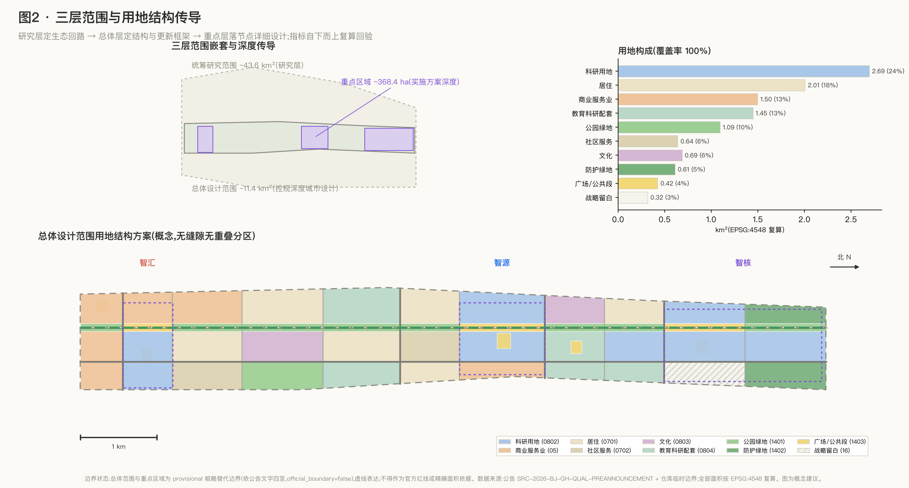
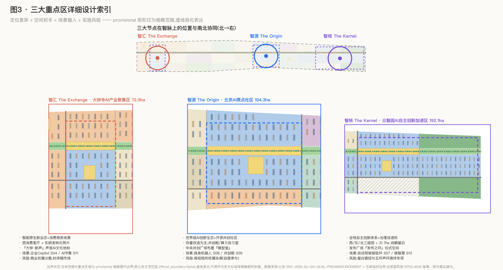
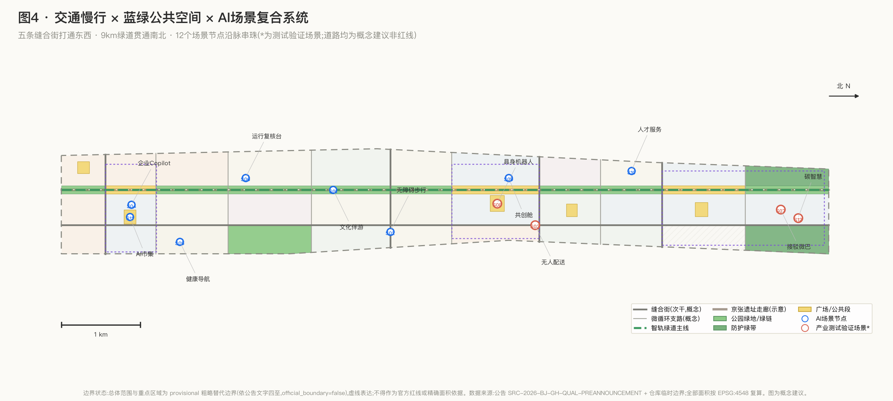

总览地图 · 总体概念
一脉(百年智轨绿廊9km)· 三核(智核/智源/智汇)· 五带(东西缝合街)· 多组团(49个用地单元)· 两翼(智桥/智川)

三层范围 · 用地分区
统筹研究 ~43.6km²(研究)→ 总体设计 ~11.4km²(控规深度城市设计)→ 重点区域 ~368.4ha(实施方案深度);用地覆盖率100%,拓扑无缝可审。

重点区域 · 三大节点
智核·众智园(192.1ha,全栈自主创新+治理话语权)/ 智源·AI原点社区(104.3ha,世界级创新生态+开源社区)/ 智汇·大钟寺(72.0ha,智能原生新业态)。

交通慢行 · 蓝绿公共空间 · 建筑
五条缝合街打通东西割裂,绿道主线贯通南北;绿地率 14.9%、公共空间率 3.7%;概念建筑 702 栋(留~30%/改~20%/建~50%,算法示意非地块结论)。

核心指标(EPSG:4548 复算)
全部指标由提交几何重算或计数复核,与 metrics.json 一致;评审者可复现。
总体范围面积
1,141.3 万㎡
临时口径 · EPSG:4548
用地覆盖率
100%
无缝隙无重叠分区
绿地率
14.9%
9km 连续绿廊 · 待official复算
公共空间率
3.7%
5广场+3公共段 · 待official复算
概念容积率
0.90
非法定强度
概念建筑规模
1,028.3 万㎡
702栋参数化概念建筑
建筑基底密度
9.5%
非法定强度
重点区域合计
369.3 万㎡
3处 · 公告368.4万㎡
道路用地估算
50.4 万㎡
假定宽度估算 · 非红线
绿地面积
170.3 万㎡
公园+防护+绿链
公共空间面积
42.5 万㎡
仪式序列空间
场景/画像/地标
12 / 6 / 4
含4个测试验证场景
待确认法定控制条件(A-CONTROLS-001):容积率 / 建筑高度 / 建筑密度 / 法定绿地率 / 退线均缺失。
本页全部强度数值为概念复算参考;official 边界与控规条件补齐后统一重算。
AI 场景 · 12 张场景卡
覆盖 6 类用户画像;带 * 为产业测试验证场景(4个),统一执行"划定边界+限定时段+知情标识+人工接管+事后审计"。
| 场景卡 | 空间位置 | 服务对象 |
|---|---|---|
| S01 智轨漫步·AI文化伴游 | 绿廊全线 | 游客/家庭 |
| S02 无障碍AI步行环境 | 缝合街与绿道 | 老龄/无障碍人群 |
| S03* 低速无人配送测试走廊 | 学院路西侧服务街 | 物流企业/居民 |
| S04 企业服务智能体Copilot | 大钟寺产业组团 | 中小企业 |
| S05 AI健康服务导航 | 社区服务组团 | 居民/老龄 |
| S06 城市运行AI复核台 | 全带治理后台 | 治理者 |
| S07* 自动驾驶接驳微巴测试环 | 众智园环线 | 通勤者/企业 |
| S08* 具身机器人街区试验场 | 原点中央广场周边 | 机器人企业 |
| S09 创业者24h共创舱 | 原点研发组团 | 创业者 |
| S10 国际人才落地服务智能体 | 双清人才居住组团 | 国际人才 |
| S11 AI市集与开发者夜校 | 大钟寺消费客厅 | 开发者/市民 |
| S12* 城市传感与碳智慧试点 | 北五环防护绿带 | 治理者/研究者 |
更新项目 · 分期实施
三期滚动(概念):
- PH-1 近期 AI原点启动区 ~3.68km²:中央共创广场/存量共创化改造/成府路缝合街/绿廊中段贯通
- PH-2 中期 众智园拓展区 ~3.45km²:全栈组团一期/发布之环/防护绿带碳智慧/双清转化组团
- PH-3 远期 大钟寺协同区 ~4.28km²:消费客厅改造/门户广场人字形之光/高校带开放共享
四处AI朝圣地标(概念创意):
- L1 人字形之光 · 百年京张AI纪念地+开源贡献者荣誉墙(西直门门户)
- L2 模型堂 The Model Hall · 全球开源模型荣誉殿(AI原点)
- L3 发布之环 · 全球AI首发环形剧场(众智园)
- L4 大钟·新声 · 声音AI文化装置(大钟寺,涉文保以审定为前提)
任务覆盖(公告 1.3/1.4/1.5 + agent.1-6,共 23 条)
| ID | 任务 | 主要章节 | 状态 |
|---|---|---|---|
| 1.3.1 | 构建世界级AI创新生态体系 | 三层范围工作框架、统筹研究范围产业与未来城市研究 | 已覆盖 |
| 1.3.2 | 建设适配AI新质生产力的新型城市形态 | 三层范围工作框架、统筹研究范围产业与未来城市研究 | 已覆盖 |
| 1.3.3 | 打造全球AI创新人才向往的高品质城区 | 三层范围工作框架、统筹研究范围产业与未来城市研究 | 已覆盖 |
| 1.4.1 | 统筹研究范围 | 三层范围工作框架、统筹研究范围产业与未来城市研究 | 已覆盖 |
| 1.4.2 | 总体设计范围 | 三层范围工作框架、统筹研究范围产业与未来城市研究 | 已覆盖 |
| 1.4.3 | 重点区域范围 | 三层范围工作框架、统筹研究范围产业与未来城市研究 | 已覆盖 |
| 1.5.1.1 | 统筹研究范围：AI创新生态体系 | 三层范围工作框架、统筹研究范围产业与未来城市研究 | 已覆盖 |
| 1.5.1.2 | 统筹研究范围：适配人工智能的未来城市形态 | 三层范围工作框架、统筹研究范围产业与未来城市研究 | 已覆盖 |
| 1.5.2.1 | 总体设计范围：产业目标与功能布局 | 三层范围工作框架、统筹研究范围产业与未来城市研究 | 已覆盖 |
| 1.5.2.2 | 总体设计范围：城市更新总体框架 | 三层范围工作框架、统筹研究范围产业与未来城市研究 | 已覆盖 |
| 1.5.2.3 | 总体设计范围：交通轨道市政配套设施 | 三层范围工作框架、统筹研究范围产业与未来城市研究 | 已覆盖 |
| 1.5.2.4 | 总体设计范围：京张遗址公园活力带 | 三层范围工作框架、统筹研究范围产业与未来城市研究 | 已覆盖 |
| 1.5.2.5 | 总体设计范围：城市风貌 | 三层范围工作框架、统筹研究范围产业与未来城市研究 | 已覆盖 |
| 1.5.3.required | 重点区域范围详细设计必选项 | 三层范围工作框架、统筹研究范围产业与未来城市研究 | 已覆盖 |
| 1.5.3.1 | 众智园AI自主创新加速区 | 三层范围工作框架、统筹研究范围产业与未来城市研究 | 已覆盖 |
| 1.5.3.2 | 北京AI原点社区 | 三层范围工作框架、统筹研究范围产业与未来城市研究 | 已覆盖 |
| 1.5.3.3 | 大钟寺AI产业聚集区 | 三层范围工作框架、统筹研究范围产业与未来城市研究 | 已覆盖 |
| agent.1 | 一带总体概念与功能统筹方案设计 | 统筹研究范围产业与未来城市研究、总体设计范围城市更新与控规深度城市设计 | 已覆盖 |
| agent.2 | AI全栈自主创新体系与世界级AI创新生态设计 | 统筹研究范围产业与未来城市研究、重点区域详细设计 | 已覆盖 |
| agent.3 | AI+场景赋能新范式与智能化AI活力城市设计 | AI 创新生态、人才画像与 AI+ 场景 | 已覆盖 |
| agent.4 | AI公共空间、智能原生新业态与朝圣地标设计 | 蓝绿空间、公共空间与城市风貌、重点区域详细设计 | 已覆盖 |
| agent.5 | 百年京张文化、中关村文化与AI新文化融合叙事设计 | 蓝绿空间、公共空间与城市风貌、统筹研究范围产业与未来城市研究 | 已覆盖 |
| agent.6 | 一带全球AI创新活动体系与长期运营设计 | 更新项目清单、实施政策与分期计划 | 已覆盖 |
自检状态
- PASS deterministic validation(结构/枚举/引用完整性)
- PASS spatial review(边界内/用地全覆盖无重叠/指标与几何一致)
- PASS visual packaging(离线HTML,data-metric 与 metrics.json 一致)
- PASS professional evidence(标准矩阵/深度矩阵/证据引用)
KEY_AREA_PROVISIONAL 为预期内 minor 提示:重点区为临时粗略范围,不作官方红线;不阻断内容评分。以 self_check.json 实际输出为准。
来源(12 条)
| ID | 名称/用途 | 层级 |
|---|---|---|
| SITE-PACKAGE | Project brief, enums, allowed design space, ranges, and schemas. | official_public |
| SOURCE-REGISTRY | Public/cleared/provisional source usability registry; distinguishes formal-ready, background-only, provisional-only, and needs-review materials. | repository_public_registry |
| PROCESSED-FACT-PACK | Agent-readable navigation layer for scopes, required tasks, source-use boundaries, and missing-data checklist; not a new authority source. | repository_processed_reference |
| BOUNDARY-SOURCE | Submitted site boundary geometry source (provisional). | agent_inferred_from_public_data |
| KEY-AREA-SOURCE | Three required detailed-design key area boundaries (provisional). | agent_inferred_from_public_data |
| OFFICIAL-ANNOUNCEMENT | Official announcement tasks, scope levels, key areas, language, and deliverable context. | official_public |
| AGENT-TASKBOOK | Agent-facing open-call principles, six required agent tasks, scenario/branding/operation requirements, and boundary clause. | user_provided_cleared |
| SRC-2026-BJ-KW-THREE-AREAS-WINGS | “三区两翼”打造世界级AI集聚地 | A1 |
| SRC-2026-HAIDIAN-1X1 | 海淀区发布“1+X+1”现代化产业体系建设布局 | A1 |
| SRC-2023-MNR-LAND-USE-CLASSIFICATION | 国土空间调查、规划、用途管制用地用海分类指南 | A0 |
| SRC-2017-MOHURD-URBAN-DESIGN-MEASURES | 城市设计管理办法 | A0 |
| SRC-MOHURD-CONTROL-DETAILED-PLANNING | 城市、镇控制性详细规划编制审批办法 | A0 |
假设与资料缺口(5 条)
- A-CONTROLS-001(pending_professional_confirmation):Detailed regulatory controls, road redlines, ownership, municipal utilities, and engineering constraints must be confirmed from official attachments before statutory use.
- A-BOUNDARY-001(pending_official_geometry):总体设计范围与三处重点区域采用仓库 provisional 粗略边界(依公告文字四至与约面积校核),official_boundary=false、boundary_precision=provisional_rough;所有面积复算仅为临时口径。
- A-ROADS-001(pending_professional_confirmation):道路中心线为概念性微循环建议;road_area_sqm 按等级假定宽度(次干40m/支路28m/绿道24m/骑行12m,取中心线长度×假定宽度)估算。
- A-BUILDINGS-001(pending_professional_confirmation):建筑基底为参数化概念形态(70m×22m 板式,网格 120m×80m,层数按用地类型 3-18 层取值),floors_concept/height_m_concept 仅为形态参考;现状建筑普查与权属数据缺失。
- A-EXISTING-001(data_gap):现状建筑、人口、权属、市政管线、文保范围、蓝线绿线等法定基础数据未获取;现状要素(京张遗址走廊、北五环)仅按公告文字示意。